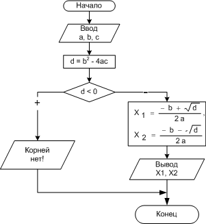

Лекция № 3 (2ч)
Тема: Условный оператор if – else в языке С++. Операторы switch и break.
Цель лекции: Изучить условный оператор if – else, его конструкцию и принцип работы.
Рассматриваемые вопросы:
1.Оператор условия if. Использование простых и составных операторов.
2.Использование оператора switch и break.
Глоссарий
Оператор - наименьшая автономная часть языка программирования; команда.
Формат оператора – совокупность правил образования языковых конструкций.
1.Оператор условия if. Использование простых и составных операторов.
Оператор C++ if позволяет программам осуществлять проверку и затем на основании этой проверки выполнять операторы.
Формат оператора if следующий: if (условие) оператор
Обычно оператор if выполняет проверку, используя операцию сравнения C++. Если результат проверки является истиной, if выполняет оператор, который следует за ним.
Пример 1. Написать программу, которая определяет минимальное число из трех.
#include <iostream>
using namespace std;
int main()
{
int x = 4, y = 2, z = 3, min;
min = x; // min = 4
if(y < min)
min = y; // min = 2
if(z < min)
min = z; // min не меняется
cout<<"min = "<<min<<endl;
system("pause");
return 0;
}
Результат программы:
min =2
Оператор else
В большинстве случаев программам потребуется указать один набор операторов, выполняющийся, если условие истинно, и второй набор, выполняющийся, если условие ложно. Для указания операторов, которые должны выполняться, когда условие ложно, программы должны использовать оператор else.
Формат оператора else:
if (условие истинно)
{
Блок кода
}
else
{
Блок кода
}
Если в условном операторе условие выполняется, то работает блок – кода, который идет после ключевого слова if, иначе выполняется блок – кода, который идет после ключевого слова else.
Пример 2. Известны коэффициенты a, b и с квадратного уравнения. Вычислить корни квадратного уравнения.
|
 |
|
|
#include <iostream>
#include <cmath>
using namespace std;
int main()
{
float a,b,c,d,x1,x2;
cout << "Vvedite a,b,c"<<endl;
cin >> a >> b >> c;
cout << "a="<<a<<" b="<<b<<" c="<<c<<endl;
d=b*b-4*a*c;
if (d<0)
cout << "Resheniy net"<<endl;
else
{
x1=(-b+sqrt(d))/2*a;
x2=(-b-sqrt(d))/2*a;
cout << "x1=" << x1 << "x2="<< x2;
}
system("PAUSE");
return 0;
}
Проверка двух или более условий с использованием логических операций.
Оператор if позволяет программам проверять определенные условия. По мере усложнения ваших программ возникает необходимость в проверке сразу нескольких условий. Для выполнения таких проверок можно использовать логическую операцию C++ И (&&). Кроме того, если вы хотите проверить, одно или другое условие, вам следует использовать логическую операцию ИЛИ (||).
Операция C++ НЕ — восклицательный знак (!) — позволяет вашим программам проверить, является ли условие не истинным. Операция НЕ превращает ложь в истину, а истину в ложь.
2.Использование оператора switch и break.
Оператор switch предназначен для организации выбора из множества различных вариантов, причём условием должно выступать равенство переменной (или выражения) конкретному значению. При использовании оператора switch, необходимо указать условие и затем один или несколько вариантов (case), которые программа попытается сопоставить с условием.
Формат оператора:
switch(переменная или выражение)
{
case первое значение: одни инструкции;
case второе значение: другие инструкции;
. . .
default: инструкции которые выполнятся в любом другом случае
}
Выражение, следующее за ключевым словом switch в круглых скобках, может быть любым выражением, допустимыми в языке С++, значение которого должно быть целым. Ключевое слово case служит для того, чтобы описать каждый конкретный случай. После него ставится двоеточие.
Оператор switch состоит из двух частей. Первая часть оператора switch представляет собой условие, которое появляется после ключевого слова switch. Вторая часть представляет собой возможные варианты соответствия. Когда программа встречает оператор switch, она сначала исследует условие, а затем пытается найти среди возможных вариантов тот, который соответствует условию. Если программа находит соответствие, выполняются указанные операторы. Если же ни один из указанных вариантов не соответствует условию, то выполняется вариант default. . Оператор break указывает C++ завершить текущий оператор switch и продолжить выполнение программы с первого оператора, следующего за оператором switch.
Пример 3. Написать программу, которая определяет, на каком курсе вы учитесь.
switch switch
(kyrs) case
‘2’:
cout<<”
Вы учитесь на
втором
курсе”<<endl;
break; case
‘4’:
cout<<”
Вы учитесь на
четвертом
курсе”<<endl;
break; case
‘3’:
cout<<”
Вы учитесь на
третьем
курсе”<<endl;
break; case
1 case
2 case
3 case
4 default case
‘1’:
cout<<”
Вы учитесь на первом курсе”<<endl;
break; default:
cout<<”
Вы уже закончили
ВУЗ
”<<endl;
break; конец
#include <iostream>
using namespace std;
int main()
{
setlocale(LC_ALL,"Russian");
char kyrs = '1';
switch (kyrs)
{
case '1': cout<< "Вы учитесь на первом курсе"<<endl; break;
case '2': cout<< " Вы учитесь на втором курсе "<<endl; break;
case '3': cout<< " Вы учитесь на третьем курсе "<<endl; break;
case '4': cout<< " Вы учитесь на четвертом курсе "<<endl; break;
default: cout << "Вы уже закончили ВУЗ"<<endl; break;
}
system("PAUSE"); return 0;
}
Результат программы: Вы учитесь на первом курсе.
Пример 4. Написать программу, которая определяет, какая клавиша, была нажата.
#include <iostream>
using namespace std;
int main()
{
setlocale(LC_ALL,"Russian");
char ch;
cout<<"Нажмите любую клавишу:";
cin>>ch;
switch(ch)
{
case 'A': cout<<"Нажата клавиша А"<<endl; break;
case 'B': cout<<"Нажата клавиша B"<<endl; break;
case 'C': cout<<"Нажата клавиша C"<<endl; break;
case 'D': cout<<"Нажата клавиша D"<<endl; break;
default: cout<<"Нажата другая клавиша"; break;
}
system("PAUSE");
return 0;
}
Результат программы: Нажата клавиша А
Контрольные вопросы:
1.Напишите формат оператора if-else .
2.Предназначение оператора if-else.
3.Можно ли в С++ проверить сразу несколько условий?
4.Какие операции необходимо использовать для выполнения таких проверок?
5.В каких случаях оператор if предпочтительнее оператора switch?
6.Для чего используется оператор switch? Напишите формат оператора.
7.Для чего служит ключевое слово case?
8.Если ни один из указанных вариантов не соответствует условию, то выполняется вариант…..
9.Для чего используется оператор break?
Литература:
1.Хортон А. Visual 2010: полный курс.:Пер. с анг.-М.:ООО «И.Д.Вильямс», 2011г , 1216 с.: ил.
2.Пахомов Б.И. С/C++ и MS Visual C++ 2010 для начинающих. – СПб.:БХВ-Петербург, 2011.-736 с.:ил.
3.Зиборов В. В. MS Visual C++ 2010 в среде.NET. Библиотека программиста. — СПб.: Питер,
2012. — 320 с.: ил.
Прохоренок Н.А. Программирование на С++ в Visual Studio 2010 Express, - СПб.: Питер, 2011г , 71 с.: ил.